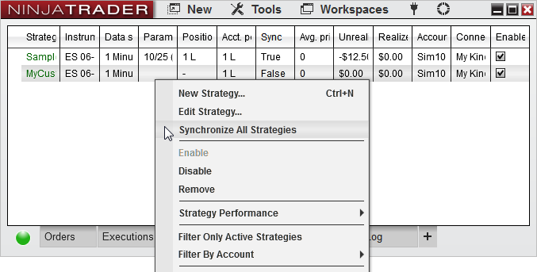

|
<< Click to Display Table of Contents >> Syncing Account Positions |


|
Syncing Account Positions
|
<< Click to Display Table of Contents >> Syncing Account Positions |
|
It is critical to understand the various options available to you that determine how the strategy will behave on startup through the Start Behavior parameters. NinjaTrader provides several option combinations that can be used in different scenarios depending on what your requirements are. Please first review the information about strategy position vs account positions as this article builds on that concept.
The Start Behavior settings can be set from the Strategy Parameters when you are adding a strategy.
Note: Please be aware that these options will only help you sync your Account Position to your Strategy Position once on startup. These options will not guarantee your Account Position remains in sync afterward. Any active orders you may have had on your account prior to strategy start that was not generated by your strategy would not have been cancelled on start and can lead to your Account Position being out of sync from your Strategy Position. Placing manual trades or running multiple strategies on the same instrument can also lead to your Account Position being out of sync from your Strategy Position. |
Warnings: •Using Synchronize account can close or place live trades to your account •If you have existing historical order references which have transitioned to real-time, you MUST update the order object reference to the newly submitted real-time order; otherwise errors may occur as you attempt to cancel the order. You may use the GetRealtimeOrder() helper method to assist in this transition. |
These are the default settings for your strategies and are the least disruptive in terms of handling your current Account Position. It assumes your Account Position is in a flat state.
When your strategy starts it will check for any active orders previously generated by the strategy on your account and cancel those first. Should the strategy be unable to cancel and receive confirmation on the cancellation of these orders within 40 seconds the strategy will not start and an alert will be issued.
•If the Strategy Position is flat, then the Account Position and Strategy Position are assumed to be in sync with each other. The next order placed by your strategy would be placed as a live order to your account. •If the Strategy Position is not flat, the strategy will place all trades in a "virtual" sense until the Strategy Position reaches or crosses a flat state. Once a flat state is achieved the Strategy Position will be assumed to be in sync with the Account Position and all future orders will be placed live.
|
 Wait until flat, synchronize account
Wait until flat, synchronize account
This combination should be used when you want to begin trading your strategy off a flat state with minimal user interaction to sync your Account Position prior to start.
When your strategy starts it will check for any active orders previously generated by the strategy on your account and cancel those first. Should the strategy be unable to cancel and receive confirmation on the cancellation of these orders within 40 seconds the strategy will not start and an alert will be issued. After the strategy is successful in cancelling any orders that required action it will check your current Account Position and compare it to a flat state. On multi-instrument strategies it will perform this check for all instruments used by the strategy.
•If the Account Position is flat already, no reconciliatory order will be submitted. The strategy will then wait for the Strategy Position to reach a flat state as well before submitting any orders live. •If the Account Position is not flat, NinjaTrader will submit a market order(s) to reconcile the Account Position to a flat state. The strategy will then wait for the Strategy Position to reach a flat state before submitting live orders.
|
This combination should only be used when you are sure your Account Position is the way you want it to be in relation to the Strategy Position prior to strategy start.
On startup the strategy will begin executing orders immediately.
•Any active orders on the account previously generated by the strategy that does not match* an active strategy order will be cancelled. Should the strategy be unable to cancel and receive confirmation on the cancellation of these orders within 40 seconds the strategy will not start and an alert will be issued. •The matching active orders on the account will then be mapped to the active strategy orders •Any remaining active strategy orders that cannot be successfully paired will be submitted live and the strategy will begin managing your Strategy Position assuming your Account Position is in sync with it.
* A previously generated order is considered to match an active strategy order when the order action, order type, quantity, limit price, and stop price are exactly identical. |
 Immediately submit, synchronize account
Immediately submit, synchronize account
This combination should be used when you want to begin trading with your strategy immediately while not worrying about your Account Position prior to start.
On startup the strategy will begin executing orders immediately.
•Any active orders on the account previously generated by the strategy that does not match* an active strategy order will be cancelled. Should the strategy be unable to cancel and receive confirmation on the cancellation of these orders within 40 seconds the strategy will not start and an alert will be issued. •The matching active orders on the account will then be mapped to the active strategy orders •Any remaining active strategy orders that cannot be successfully paired will be submitted live and the strategy will then try to sync your Account Position to your Strategy Position through the process below.
After the strategy is successful in cancelling and submitting any orders that required action it will check your current Account Position and compare it to your Strategy Position. On multi-instrument strategies it will perform this check for all instruments used by the strategy.
•If the Account Position matches your Strategy Position, no reconciliatory order will be submitted. The strategy will then begin managing your Strategy Position immediately. •If the Account Position does not match your Strategy Position, NinjaTrader will submit a market order(s) to reconcile the Account Position to match your Strategy Position. The strategy will then begin managing your Strategy Position immediately.
* A previously generated order is considered to match an active strategy order when the order action, order type, quantity, limit price, and stop price are exactly identical. |
This setting should be used if you would like your strategy to disregard the historical virtual Strategy Position and to start in the same position as the real-world Account Position.
On startup the strategy will begin executing orders immediately.
•Any active orders on the account previously generated by the strategy that does not match* an active strategy order will be cancelled. Should the strategy be unable to cancel and receive confirmation on the cancellation of these orders within 40 seconds the strategy will not start and an alert will be issued. •The matching active orders on the account will then be mapped to the active strategy orders •Any remaining active strategy orders that cannot be successfully paired will be submitted live and the strategy will then try to sync your Account Position to your Strategy Position. •Only one strategy with this setting can be started at a time for an individual account and instrument. •The account and instrument the strategy is started on must not have any working orders which were submitted outside of the strategy, or by another instance of the same strategy. If an order is detected, the strategy can not be started until these orders have been manually managed.
* A previously generated order is considered to match an active strategy order when the order action, order type, quantity, limit price, and stop price are exactly identical. |
The Synchronize All Strategies option is found on the Strategies tab of the NinjaTrader Control Center and right clicking on the Strategy Grid.

Selecting this feature will scan through the strategy position of all enabled strategies which are not "Wait until flat" on each account and instrument combination (including all instruments under a multi-series strategy) and will then compare the aggregated strategy position to the account position.
Under the condition that the account position does NOT match the aggregated strategy position, a market order will be submitted to the account to match the aggregated strategy position.
Consider the following scenario, where all 4 strategies are running on a live account which is currently flat:
•Strategy A and D are both showing a 1 Long position and are both "Immediately submit" •Although Strategy B shows 2 Short, the strategy is currently "Wait until flat" so it is NOT considered in this process •Strategy C is Flat and does not contain a position •Therefore, the calculated aggregated strategy position will be 2 long
Selecting Synchronize All Strategies with the above combination would then issue a market order to buy 2 contracts on the live account.
|